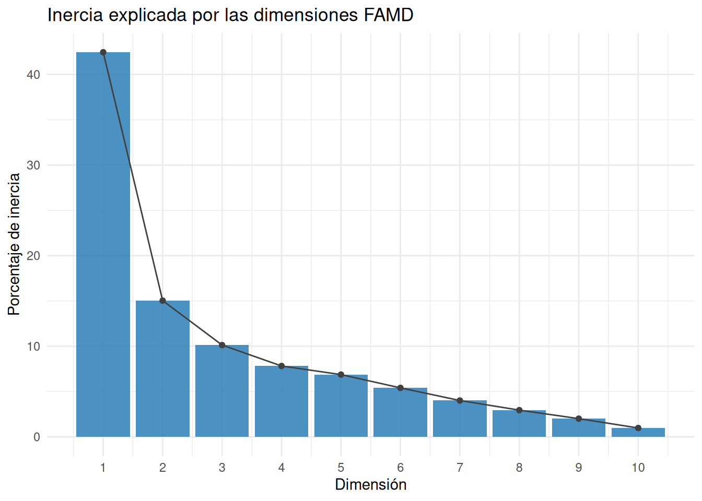
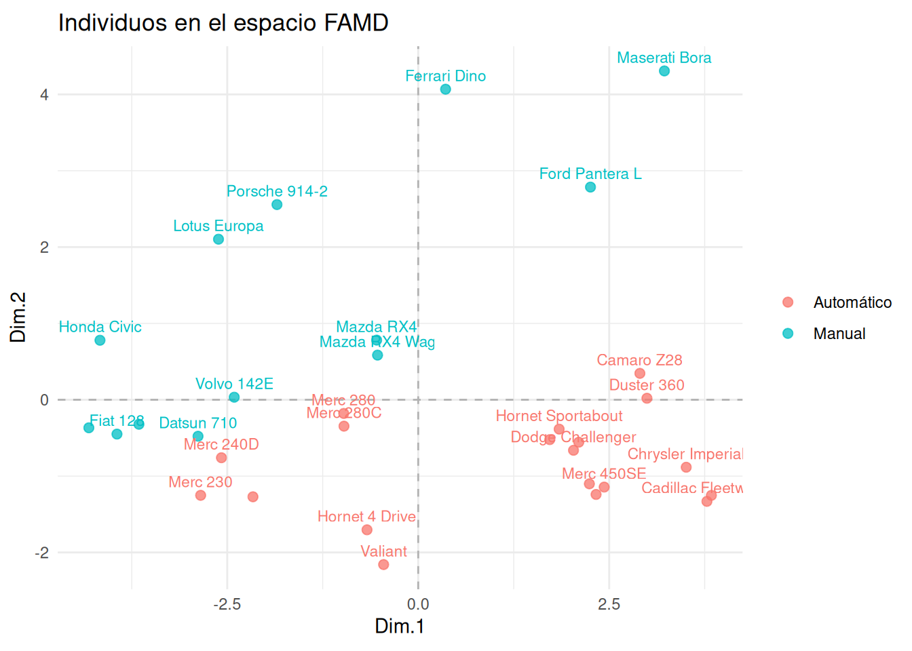
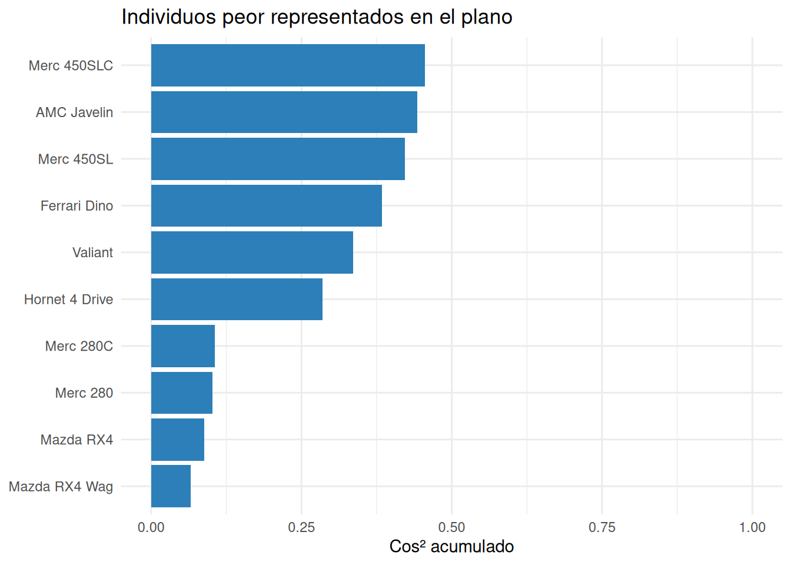
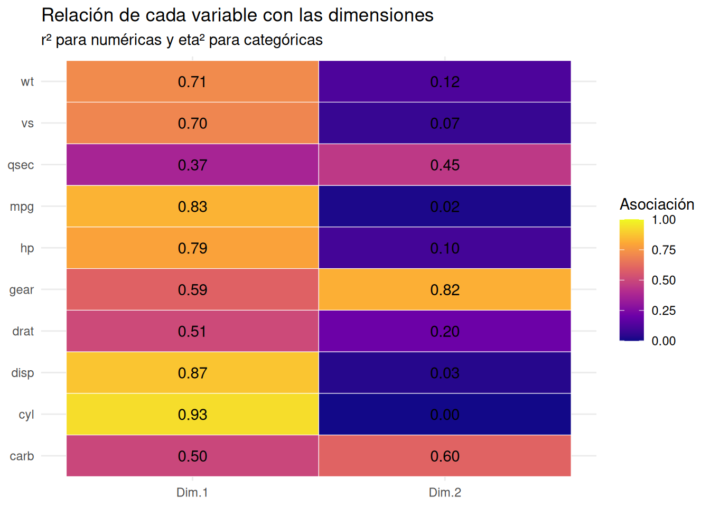
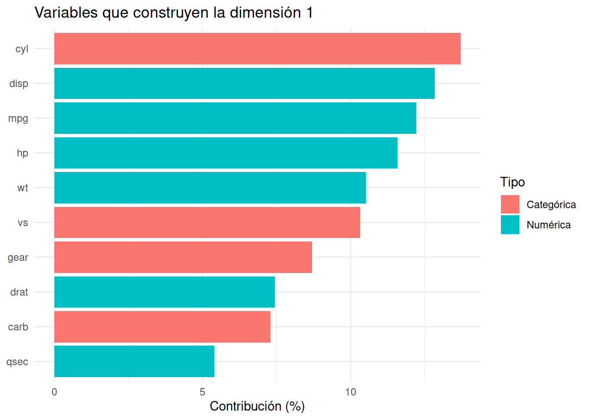
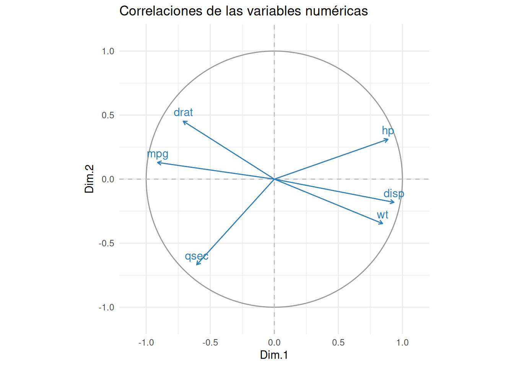
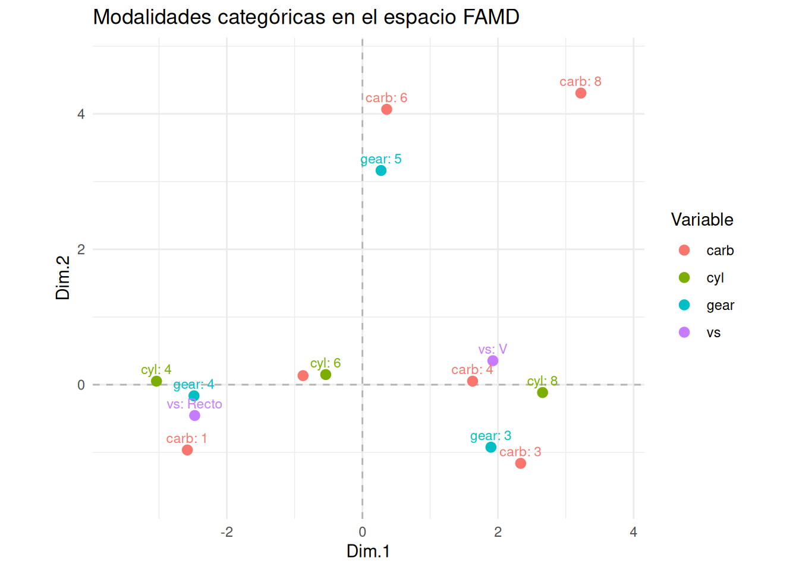

Código
library(tidyverse)
library(knitr)
source("FuncionesFAMD.R")library(tidyverse)
library(knitr)
source("FuncionesFAMD.R")Los datos deben contener individuos en filas, variables cuantitativas como columnas numéricas y variables cualitativas como factores. Hay que tratar previamente los valores ausentes y los niveles vacíos. El análisis central se ajusta con FactoMineR::FAMD(datos, graph = FALSE); las funciones auxiliares resumen y representan sus resultados.
PCA representa individuos descritos por variables numéricas. MCA representa individuos descritos por variables categóricas. El análisis factorial de datos mixtos, FAMD, construye un único espacio para individuos descritos simultáneamente por ambos tipos de variables.
Por ejemplo, para comparar automóviles podemos disponer de consumo, potencia y peso, pero también de tipo de motor, transmisión o número de marchas. Convertir las categorías en números arbitrarios y aplicar PCA alteraría sus distancias. Ignorar las variables numéricas para aplicar MCA también perdería información.
FAMD busca responder:
| Método | Entrada | Resultado principal | Uso característico |
|---|---|---|---|
| PCA | Variables numéricas | Ejes de máxima varianza | Reducción e interpretación de variables numéricas |
| MCA | Variables categóricas | Ejes de inercia \(\chi^2\) | Perfiles de modalidades |
| FAMD | Variables numéricas y categóricas | Ejes factoriales comunes | Interpretación conjunta de datos mixtos |
| Gower | Variables mixtas | Matriz de disimilitudes | Clustering o búsqueda de vecinos |
FAMD y Gower no son intercambiables. Gower se concentra en distancias entre individuos; FAMD construye dimensiones que permiten estudiar también la relación de cada variable con los ejes.
Construiremos una versión mixta de mtcars. La transmisión será suplementaria: coloreará e interpretará el mapa sin construir sus ejes.
datos_famd <- mtcars |>
transmute(
mpg,
disp,
hp,
drat,
wt,
qsec,
cyl = factor(cyl),
vs = factor(vs, labels = c("V", "Recto")),
am = factor(am, labels = c("Automático", "Manual")),
gear = factor(gear),
carb = factor(carb)
)
tibble(
variable = names(datos_famd),
tipo = vapply(datos_famd, function(x) class(x)[1], character(1)),
valores_distintos = vapply(datos_famd, dplyr::n_distinct, integer(1))
) |>
kable()| variable | tipo | valores_distintos |
|---|---|---|
| mpg | numeric | 25 |
| disp | numeric | 27 |
| hp | numeric | 22 |
| drat | numeric | 22 |
| wt | numeric | 29 |
| qsec | numeric | 30 |
| cyl | factor | 3 |
| vs | factor | 2 |
| am | factor | 2 |
| gear | factor | 3 |
| carb | factor | 6 |
La codificación forma parte del modelo. cyl, gear y carb podrían tratarse como números discretos u ordinales en otra pregunta. Al convertirlas en factores afirmamos que importan sus categorías y no una distancia numérica lineal entre ellas.
Antes de ajustar FAMD debemos decidir:
Supongamos que hay \(p\) variables numéricas y \(Q\) variables categóricas activas. Las variables categóricas contienen en total \(K\) modalidades.
Para una variable numérica \(X_j\), FAMD utiliza:
\[ z_{ij}=\frac{x_{ij}-\bar x_j}{s_j}, \]
donde, con pesos uniformes,
\[ s_j^2=\frac{1}{n}\sum_i(x_{ij}-\bar x_j)^2. \]
La división por \(n\) corresponde a la geometría ponderada del análisis, no al estimador insesgado de la varianza poblacional. Cada variable numérica transformada tiene media 0, varianza 1 y aporta una unidad de inercia total.
Para una modalidad \(\ell\) construimos su indicador \(g_{i\ell}\) y su proporción:
\[ p_\ell=\frac{1}{n}\sum_i g_{i\ell}. \]
La columna transformada es:
\[ \widetilde g_{i\ell} =\frac{g_{i\ell}-p_\ell}{\sqrt{p_\ell}}. \]
La división por \(\sqrt{p_\ell}\) introduce la geometría \(\chi^2\): una diferencia en una modalidad rara pesa más que una diferencia en una modalidad frecuente.
La varianza de esa columna es:
\[ \operatorname{Var}(\widetilde g_\ell) =\frac{p_\ell(1-p_\ell)}{p_\ell}=1-p_\ell. \]
Si una variable categórica tiene \(L_j\) modalidades, la inercia de su bloque es:
\[ \sum_{\ell=1}^{L_j}(1-p_\ell)=L_j-1. \]
Esta identidad es importante: FAMD no divide artificialmente el bloque por el número de modalidades. Las variables cualitativas con muchas modalidades generan más inercia estructural, aunque su relación con cada dimensión se resume mediante una medida acotada, \(\eta^2\).
La matriz analizada concatena ambos bloques:
\[ X^*=\left[Z_{num}\mid Z_{cat}\right]. \]
datos_activos <- datos_famd[, names(datos_famd) != "am"]
X_estrella <- transformar_datos_famd(datos_activos)
tibble(
individuos = nrow(X_estrella),
columnas_transformadas = ncol(X_estrella),
inercia_total = mean(rowSums(X_estrella^2))
) |>
kable(digits = 3)| individuos | columnas_transformadas | inercia_total |
|---|---|---|
| 32 | 20 | 16 |
La inercia total teórica es:
\[ I_{total}=p+\sum_{j=1}^{Q}(L_j-1). \]
En el ejemplo hay seis variables numéricas y cuatro categóricas activas. Sus números de modalidades son 3, 2, 3 y 6, por lo que:
\[ I_{total}=6+(3-1)+(2-1)+(3-1)+(6-1)=16. \]
Una variable numérica se relaciona con un eje mediante una correlación \(r\), mientras que una variable categórica se relaciona mediante \(\eta^2\). En ambos casos la asociación está acotada entre 0 y 1 cuando se usa \(r^2\) para la variable numérica.
Por tanto, «equilibrar» no significa que todos los bloques tengan exactamente la misma inercia total. Significa que las variables numéricas estandarizadas y las variables cualitativas con ponderación \(\chi^2\) pueden competir en la construcción de cada dimensión mediante medidas comparables.
Las categorías raras y las variables con muchas modalidades siguen necesitando revisión. La ponderación correcta evita tratarlas como indicadores ordinarios, pero no elimina automáticamente su posible inestabilidad.
FAMD aplica una geometría euclídea a \(X^*\). Para dos individuos \(i\) e \(i'\), la parte numérica es:
\[ d^2_{num}(i,i')= \sum_{j=1}^{p} \left(\frac{x_{ij}-x_{i'j}}{s_j}\right)^2. \]
Para una variable categórica, si ambos individuos comparten modalidad, su contribución a la distancia es cero. Si presentan modalidades distintas \(a\) y \(b\), la contribución es:
\[ d^2_j(i,i')=\frac{1}{p_a}+\frac{1}{p_b}. \]
Esto se obtiene porque las dos filas difieren en \(1/\sqrt{p_a}\) sobre la columna de \(a\) y en \(1/\sqrt{p_b}\) sobre la de \(b\).
La distancia completa es:
\[ d^2(i,i')=d^2_{num}(i,i')+d^2_{cat}(i,i'). \]
Dos individuos son próximos si combinan valores numéricos semejantes y modalidades semejantes. El concepto de semejanza depende de las desviaciones típicas numéricas y de las frecuencias categóricas.
FAMD realiza una PCA ponderada de \(X^*\) sin volver a escalar sus columnas. Si:
\[ X^*=UDV^\top, \]
los autovalores son \(\lambda_m=d_m^2/n\) bajo pesos uniformes y las coordenadas de los individuos son las proyecciones sobre los vectores singulares.
El rango máximo no trivial es:
\[ \min\left(n-1,\ p+K-Q\right). \]
Las \(Q\) restricciones proceden de que las modalidades de cada variable categórica suman 1.
El ajuste central permanece visible. Declaramos am suplementaria mediante su posición.
ajuste_famd <- FactoMineR::FAMD(
datos_famd,
ncp = 10,
sup.var = which(names(datos_famd) == "am"),
graph = FALSE
)
resumen_famd <- resumir_famd(ajuste_famd)
kable(resumen_famd$autovalores, digits = 3)| dimension | autovalor | porcentaje | acumulado |
|---|---|---|---|
| 1 | 6.793 | 42.453 | 42.453 |
| 2 | 2.406 | 15.037 | 57.491 |
| 3 | 1.621 | 10.130 | 67.620 |
| 4 | 1.251 | 7.821 | 75.441 |
| 5 | 1.099 | 6.870 | 82.312 |
| 6 | 0.865 | 5.406 | 87.717 |
| 7 | 0.642 | 4.010 | 91.728 |
| 8 | 0.472 | 2.948 | 94.676 |
| 9 | 0.322 | 2.011 | 96.686 |
| 10 | 0.156 | 0.977 | 97.663 |
ncp controla cuántas dimensiones se conservan en el resultado. Debemos guardar más dimensiones que las dos dibujadas si queremos decidir después cuántas interpretar o utilizar en un clustering.

La selección de dimensiones combina caída de autovalores, inercia acumulada, interpretabilidad, cos² y finalidad del análisis. No existe un porcentaje universal adecuado para todos los problemas mixtos.

Dos coches cercanos tienen perfiles parecidos considerando conjuntamente medidas y categorías activas. El color muestra la transmisión, pero am no ha construido los ejes.
Como siempre, el mapa es una proyección. El cos² acumulado indica qué proporción de la distancia de cada individuo al centro queda representada en el plano.
calidad_famd <- calidad_individuos_famd(ajuste_famd, ejes = c(1, 2), n = 10)
kable(calidad_famd$tabla, digits = 3)| individuo | cos2_plano |
|---|---|
| Mazda RX4 Wag | 0.065 |
| Mazda RX4 | 0.089 |
| Merc 280 | 0.102 |
| Merc 280C | 0.106 |
| Hornet 4 Drive | 0.286 |
| Valiant | 0.336 |
| Ferrari Dino | 0.384 |
| Merc 450SL | 0.422 |
| AMC Javelin | 0.443 |
| Merc 450SLC | 0.456 |

Un individuo con cos² bajo no debe interpretarse detalladamente en ese plano, aunque sus coordenadas aparezcan dibujadas.
Para una variable numérica \(X_j\), FAMD() representa su asociación con la dimensión mediante:
\[ r^2(X_j,F_m). \]
Para una variable categórica \(Y_j\), utiliza:
\[ \eta^2(Y_j,F_m)= \frac{\sum_\ell n_\ell(\bar f_{\ell m}-\bar f_m)^2} {\sum_i(f_{im}-\bar f_m)^2}. \]
Ambas cantidades están entre 0 y 1. Son adecuadas para comparar qué variables, con independencia de su tipo, están más relacionadas con una dimensión.

La primera dimensión está relacionada principalmente con cilindros, desplazamiento, consumo, potencia, peso y forma del motor. La segunda está dominada por marchas y carburadores, acompañados por qsec.
La asociación mide qué bien resume una dimensión a una variable. La contribución mide cuánto ha participado esa variable en la construcción del eje. Conviene mirar ambas.
dimension_1 <- resumir_dimension_famd(ajuste_famd, dimension = 1)
kable(dimension_1$variables, digits = 3)| variable | asociacion | contribucion | cos2 | tipo |
|---|---|---|---|---|
| cyl | 0.931 | 13.711 | 0.434 | Categórica |
| disp | 0.872 | 12.836 | 0.760 | Numérica |
| mpg | 0.830 | 12.221 | 0.689 | Numérica |
| hp | 0.787 | 11.581 | 0.619 | Numérica |
| wt | 0.714 | 10.515 | 0.510 | Numérica |
| vs | 0.701 | 10.319 | 0.491 | Categórica |
| gear | 0.591 | 8.695 | 0.174 | Categórica |
| drat | 0.505 | 7.437 | 0.255 | Numérica |
| carb | 0.495 | 7.291 | 0.049 | Categórica |
| qsec | 0.366 | 5.395 | 0.134 | Numérica |

Una variable puede estar muy asociada a un eje y no ser la única que lo construye. El nombre de la dimensión debe resumir el patrón conjunto.
Las correlaciones conservan signo y permiten leer la dirección de las variables numéricas.

En el primer eje, disp, hp y wt apuntan en una dirección, mientras que mpg y drat lo hacen en la opuesta. El signo global del eje podría invertirse sin cambiar ninguna conclusión; lo importante es la oposición relativa.
El mapa de asociación anterior utilizaba \(r^2\) y no mostraba signo. El círculo de correlaciones completa esa información.

Las modalidades representan centros de los individuos que las poseen. Modalidades alejadas del origen describen perfiles más específicos, pero pueden ser raras.
Para una modalidad conviene examinar:
v.test.El v.test estandariza la diferencia entre la media de los individuos de una modalidad y la media global sobre el eje. Su signo indica el lado de la dimensión. Un valor absoluto grande señala una asociación clara, pero no debe convertirse mecánicamente en una colección de contrastes independientes.
dimension_1$modalidades |>
select(etiqueta, coordenada, contribucion, cos2, v_test) |>
kable(digits = 3)| etiqueta | coordenada | contribucion | cos2 | v_test |
|---|---|---|---|---|
| cyl: 4 | -3.038 | 6.876 | 0.940 | -4.697 |
| cyl: 8 | 2.657 | 6.696 | 0.960 | 5.007 |
| vs: Recto | -2.474 | 5.804 | 0.942 | -4.661 |
| gear: 4 | -2.484 | 5.017 | 0.895 | -4.111 |
| vs: V | 1.924 | 4.514 | 0.942 | 4.661 |
| gear: 3 | 1.896 | 3.652 | 0.774 | 3.805 |
| carb: 1 | -2.583 | 3.163 | 0.689 | -2.920 |
| carb: 4 | 1.625 | 1.789 | 0.523 | 2.341 |
| carb: 3 | 2.334 | 1.107 | 0.361 | 1.604 |
| carb: 8 | 3.223 | 0.703 | 0.204 | 1.236 |
En la primera dimensión se oponen, entre otros, cuatro cilindros, motor recto y cuatro marchas frente a ocho cilindros, motor en V y tres marchas. Las modalidades concretan la interpretación sugerida por las variables completas.
Una variable suplementaria se relaciona con las dimensiones después de construirlas. No tiene contribución porque no intervino en la optimización.
resumen_famd$variables_suplementarias |>
filter(dimension %in% c("Dim.1", "Dim.2")) |>
select(variable, dimension, coordenada, tipo) |>
kable(digits = 3)| variable | dimension | coordenada | tipo |
|---|---|---|---|
| am | Dim.1 | 0.265 | Categórica suplementaria |
| am | Dim.2 | 0.452 | Categórica suplementaria |
Como am es categórica, su coordenada de variable es un \(\eta^2\). La transmisión se relaciona más con la segunda dimensión que con la primera, pero esa asociación no demuestra causalidad.
Las variables suplementarias son útiles para resultados externos, información demográfica o variables que deseamos interpretar sin permitir que definan el mapa.
Las coordenadas FAMD pueden alimentar un clustering porque convierten la información mixta en variables numéricas ortogonales. No debemos usar automáticamente solo las dos dimensiones visibles: el número de ejes debe elegirse según estructura y estabilidad.
Después de formar los grupos hay que regresar a las variables originales. Para ello pueden reutilizarse resumir_particion() con variables numéricas y tabla_composicion_clusters() con variables categóricas.
FAMD y Gower ofrecen dos rutas diferentes:
La elección depende de si queremos una representación factorial interpretable o trabajar directamente con proximidades.
La imputación debe respetar el carácter mixto de los datos. Sustituir medias y modas por separado puede debilitar asociaciones. Para problemas reales puede utilizarse una imputación específica para FAMD, como missMDA::imputeFAMD(), estimando el número de dimensiones únicamente con los datos de entrenamiento si existe una tarea predictiva posterior.
Las variables numéricas muy asimétricas o con outliers pueden necesitar transformación. Estandarizar no elimina la influencia de observaciones extremas.
FAMD aplica una descomposición factorial a una matriz formada por variables numéricas estandarizadas e indicadores categóricos centrados y ponderados por sus frecuencias. La distancia resultante combina diferencias numéricas estandarizadas y desacuerdos categóricos ponderados. Los ejes se interpretan mediante inercia, contribuciones, \(r^2\), \(\eta^2\), correlaciones, modalidades y cos².
| Función | Para qué se usa | Uso básico |
|---|---|---|
FactoMineR::FAMD() |
Ajustar FAMD y declarar variables suplementarias. | FactoMineR::FAMD(datos, sup.var = indices, graph = FALSE) |
transformar_datos_famd() |
Construir la matriz numérica transformada que explica la geometría. | X <- transformar_datos_famd(datos_activos) |
resumir_famd() |
Reunir inercia, variables, modalidades e individuos. | resumen <- resumir_famd(ajuste) |
visualizar_inercia_famd() |
Representar la inercia explicada. | visualizar_inercia_famd(ajuste) |
visualizar_individuos_famd() |
Dibujar individuos y un grupo suplementario opcional. | visualizar_individuos_famd(ajuste, grupo = grupo) |
calidad_individuos_famd() |
Identificar individuos mal representados en un plano. | calidad_individuos_famd(ajuste) |
visualizar_asociacion_variables_famd() |
Comparar \(r^2\) y \(\eta^2\) por dimensión. | visualizar_asociacion_variables_famd(ajuste) |
resumir_dimension_famd() |
Ordenar variables y modalidades importantes en un eje. | resumir_dimension_famd(ajuste, 1) |
visualizar_contribuciones_famd() |
Mostrar variables que construyen una dimensión. | visualizar_contribuciones_famd(ajuste, 1) |
visualizar_numericas_famd() |
Dibujar el círculo de correlaciones numéricas. | visualizar_numericas_famd(ajuste) |
visualizar_modalidades_famd() |
Representar las modalidades categóricas. | visualizar_modalidades_famd(ajuste) |